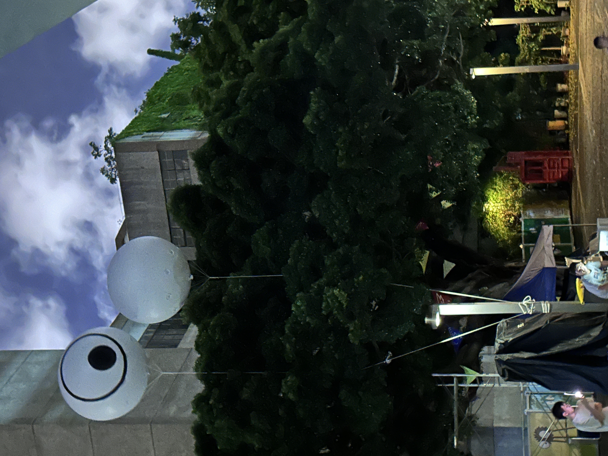
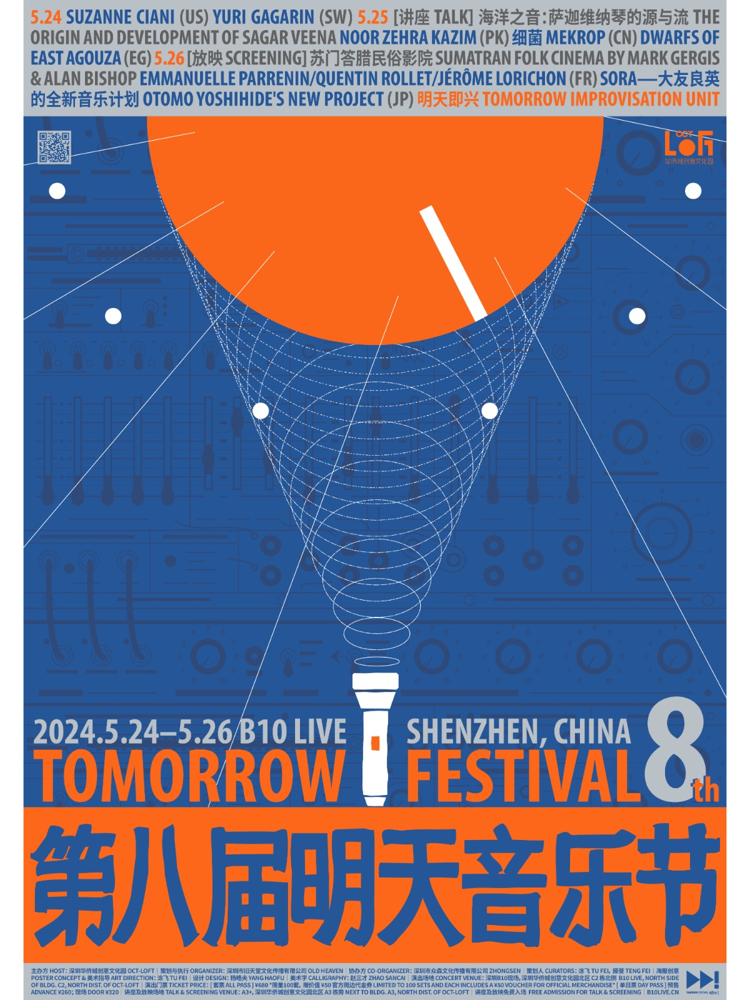
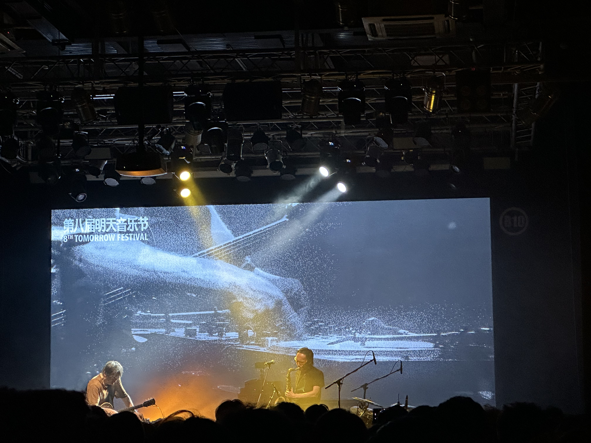

五月看到「早见 Hayami」的一篇文章《请给我五月》，感慨良多。知道标题“请给我五月”是寺山修司的一句话。在关注的人里看到共同喜欢的导演、作家、音乐家，会心一笑。索性借用这个标题记录五月下旬到六月的散碎日常。
明天音乐节
5-24 到 5-26 如愿迎来了第八届明天音乐节，为期三天的乌托邦（滥俗而合适的词汇）。算下来已经是第三次看明天音乐节，早已经轻车熟路，但愿能像候鸟一样每年如期在 B10 门口绕树三匝，有枝可栖。今年时间关系，第一晚没去，只去了第二晚和第三晚。
B10 门外，可爱的树🌲
 第二晚（5-25），最先演出的是来自巴基斯坦的音乐人，所奏乐器名为“萨迦维纳琴”，发出的声音非常符合对印度音乐的刻板印象，一种缺少和弦的，缠绕曲折的旋律。大概大比丘众辩经之时，思绪行进也如这般曲折往复吧？当然，演奏的主题也是：沉思与共振。倒是符合联想。演奏时，每个音的音尾部分，反复吟猱，总让我产生水母在鱼缸里升与浮的视觉意象。有趣，但是似乎也没有新意。
第二场是马木尔的细菌🦠乐队，马木尔吉他，张东鼓。只有节奏和耳朵轰鸣，一如既往的喜欢（对马师傅没有一丝一毫的抵抗力）。
第三场是一支埃及乐队，印象不深刻。
第二场结束后，和朋友聊天，他们在聊马木尔的音乐怎么样，以及应该用什么设备来听，我对此兴趣阙如。回头意外看到班宇，正和人在聊天。我激动着告诉朋友，他让我去打招呼，犹豫了好久最终还是未敢上前。我自是知道班宇是资深的摇滚乐迷，且品味不俗，但与他同在一个音乐现场还是觉得难得，好开心。
第三晚（5-26），因为有大友良英、明天大即兴（明天音乐节的保留节目，留下来未回的音乐人组合在一起即兴演奏），整个白天都觉漫长，想快进到晚上。
看着台上大友良英摆弄着效果器、黑胶唱片、吉他，噪音和乐音界限不再明晰，有的只是音乐本身，我的思绪早已跑飞。这种力度我相信会在未来的日子里绵延很长时间。
感谢音乐和背后的人。
